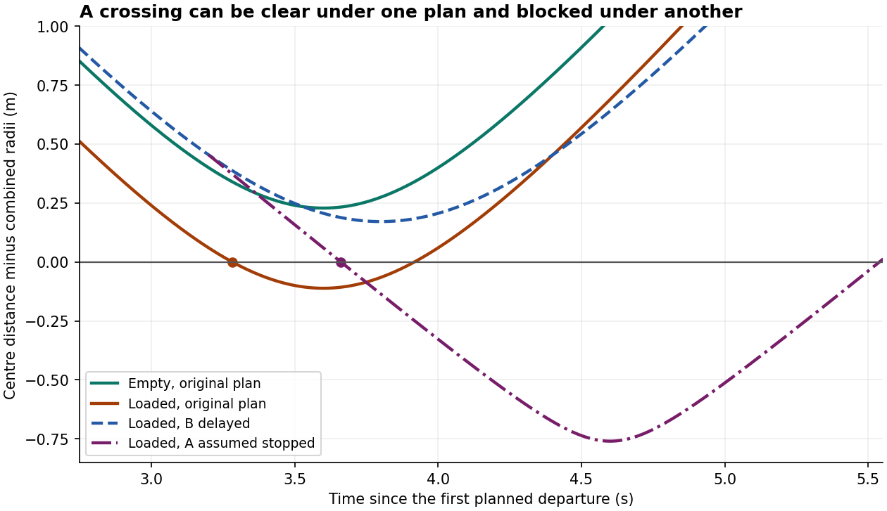

Check a fleet crossing with Open-RMF
The same crossing plan is clear for two empty robots and conflicts with loaded footprints. Check it with the Open-RMF traffic library, then test what a delay or uncertain occupancy does to the revised plan.

Photo by Auledas, scaled. Original photograph · CC BY-SA 4.0.

Watch. Identify the shared routes and where robot traffic needs coordination. Compare that with the crossing reservation and clearance evidence in the lab. Open Robotics · RMF multi-robot traffic management demonstration.
Load the traffic library
Use an Ubuntu 24.04 machine or VM with ROS 2 Jazzy configured, CMake, a C++ compiler and the ROS package named below. The exercise uses only the Open-RMF traffic library and starts no robots, fleet adapters or navigation nodes. Download CMakeLists.txt and rmf_crossing.cpp into one directory.
sudo apt install g++ cmake ros-jazzy-rmf-traffic
source /opt/ros/jazzy/setup.bash
cmake -S . -B build -DCMAKE_PREFIX_PATH=/opt/ros/jazzy
cmake --build build
./build/rmf_crossing > results.csvOpen the source. Robot A goes from (−3, 0) m to (+3, 0) m, and B goes from (0, −3) m to (0, +3) m on the same map. The matching start and end velocities give constant 1 m/s across each six-second segment when Open-RMF interpolates. Every case uses a common relative time origin. Both traffic profiles use circular footprints and the library also uses each footprint for its default vicinity. Start with no checkpoint dependencies. Open-RMF DetectConflict.
Change the footprint and arrival time
| Case | Inputs | Open-RMF 3.3.3 result |
|---|---|---|
| Same crossing time | Depart together. Radius A 0.32 m and B 0.30 m. | First conflict at 2.562 s, before either centre arrives at 3.000 s. |
| Empty, original plan | A departs at 0, B at 1.2 s. Combined radius 0.62 m. | No conflict on the tested spans. |
| Loaded, same plan | Same times. Radius A 0.56 m and B 0.40 m. | Conflict at 3.282 s while both are between endpoints. |
| A falls behind | Empty radii. Shift A’s entire modeled trajectory by 0.6 s. B stays at 1.2 s. | Conflict at 3.580 s. The arrival separation shrinks. |
| Loaded, B delayed | A at 0. B at 1.6 s with loaded radii. | No conflict on the revised modeled spans. |
| A loses its link | From 3.2 s, hold A at its last known x = +0.2 m for this case. Use the revised B plan. | Conflict at 3.661 s under the stationary assumption. |

For the loaded original plan, both centres are separated by about 3.50 m at the start and end of their overlapping time ranges. The smallest distance is around 0.849 m at 3.6 s. Endpoint clearance alone misses the overlap between those times. For the delayed case, calculate how much separation remains if each location is uncertain by 0.08 m, then reduce the expected departure separation by 0.15 s.
Connect the query to a dispatch test
- Screen both waiting locations with the full load footprint. This model checks each supplied span. Include explicit waiting and exit occupancy in a complete timed plan.
- Reproduce the late-A and lost-link cases in a test record. Keep the route revision, last known pose and time, whether entry is held, and the release evidence. The stationary example is one possible position after a lost link. The actual position can be uncertain over a larger region.
- Change the second robot’s delay or the disk radii, update the expected decision from the equation, then rebuild. Locate the smallest tested departure separation that retains a stated clearance margin. Turn the result into a fleet test that also covers traffic starvation and the case where a waiting bay is occupied.
A clear library result describes the modeled footprints, timestamps and spans. Installed traffic protection, stopping behavior and authorization to enter are separate evidence. Preserve the hold on unknown occupancy until the agreed verification clears it.
Practice P146 · Turn deployment evidence into an acceptance record